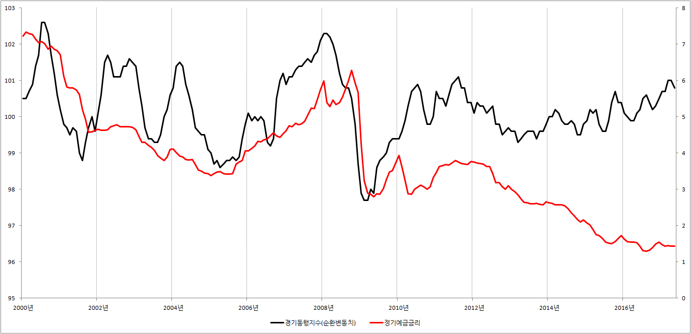
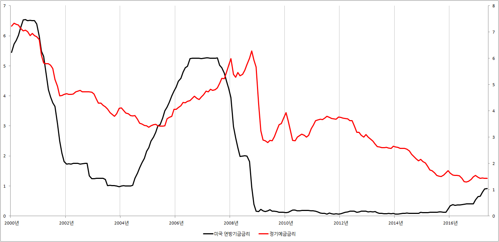

■ 채권가격 변동 이유는?
주식 가격은 끝없이 변동합니다. 오늘 10만원을 주고 산 주식이, 1년 뒤에는 100만원이 될 수도 있고, 100원이 될 수도 있습니다.
그런데 주식의 가격만 변동하는 것이 아닙니다. 채권도 주식처럼 가격이 끝없이 오르고 내립니다.
1.채권가격이란?
대한민국 정부가 다음과 같은 채권을 발행했다고 합시다.
‘100만원만 빌려주세요. 1년 뒤에 이자 10%와 원금 100만원을 합쳐서 총 110만원을 드리겠습니다.
만약 대한민국 정부에 100만원을 빌려주고 이 채권을 받았다면 채권가격은 100만원이 됩니다.
그런데 채권은 반드시 1년간 꼭 가지고 있어야하는 것은 아닙니다. 급전이 필요하면 중간에 다른 사람에게 팔수 있습니다. 그런데 채권판매가격은 고정되어 있지 않습니다. 운이 나쁘면 100만원짜리 채권을 95만원에 팔아야 할 수도 있습니다. 그리고 운이 좋은면 105만원에 팔 수도 있습니다.
2.채권가격의 변동 이유는?
대한민국 정부가 발행한 바로 위의 채권을 구입했다고 합시다. 그런데 바로 다음 날 신기한 일이 일어났습니다. 모든 은행의 예금금리가 연 0.1%가 되었습니다. 이제 은행에 1년 동안 100만원을 예금하면 이자로 1000원 밖에 못 받습니다.
은행의 예금금리가 이렇게 하락하면 재테크에 관심이 많은 사람들은 대한민국 정부가 발행한 채권을 가지고 있는 우리를 찾아와 부탁합니다.
‘당신이 가지고 있는 채권 105만원에 파세요.’
100만원짜리 채권을 105만원에 사겠다는 이야기가 좀 황당하지만, 가만히 생각해 보면 상당히 현명한 생각입니다. 지금 105만원 주고 채권을 사면 1년 뒤에 110만원을 받을수 있습니다. 따라서 실제로 번 돈은 5만원이 됩니다. 105만원을 투자하고 5만원을 벌었으니 수익률은 4.7%가 됩니다. 은행 예금금리 0.1%에 비하면 기적에 가까운 수익률입니다.
만약 100만원에 구입한 채권을 105만원에 팔았다면 어떤 일이 일어날까요? 100만원에 구입해서 105만원에 팔았으니 하룻만에 5만원을 벌게 됩니다. 기분 제대로 좋습니다.
하지만 항상 기쁜 일만 있는 것은 아닙니다. 채권을 구입한 후 은행의 예금금리가 20%로 뛰었다면 사정이 완전히 달라집니다.
예를 들어 채권을 구입한 바로 다음 날 급전이 필요해서 다른 사람에게 팔아야 한다고 합시다. 이 채권을 100만원에 팔면 아무도 사지 않습니다. 은행에 100만원을 예금하면 1년 뒤에 이자 20%를 포함해서 총 120만원을 받을수 있는데, 이 채권을 구입하면 1년 뒤에 이자 10만원을 포함해서 총 110만원밖에 못 받습니다. 따라서 채권을 구입할 이유가 없습니다.
그렇다면 우리는 어떻게 해야 할까요? 사람들의 입맛을 다시게 하려면 90만원 정도에 팔아야합니다. 즉, 채권을 구입한 후에 은행의 예금금리가 상승하면 우리가 구입한 채권은 이제 똥값이 됩니다. 물론 급전이 필요하지 않다면 이렇게 손해를 보고 팔지 않아도 됩니다. 1년간 꼭 쥐고 있으면 원금 100만원과 이자 10만원을 합쳐서 총 110만원을 받을수 있습니다.
긴 이야기를 정리하면 다음과 같은 결론을 도출할 수 있습니다.
은행 예금금리 하락 → 채권가격 상승
은행 예금금리 상승 → 채권가격 하락
3.채권투자와 금리전망
은행의 예금금리가 하락하면 우리가 구입한 채권의 인기가 상승합니다. 그리고 인기가 상승하는 만큼 높은 가격에 사려는 사람이 나타납니다. 따라서 비싼 값을 받고 채권을 다른 사람에게 팔 수 있습니다.
하지만 예금금리가 상승하면 반대의 상황이 연출됩니다. 우리가 구입한 채권의 인기가 바닥을 치고, 급전이 필요하면 손해를 보고 팔아야합니다.
따라서 채권투자에 관심이 있다면 제일 먼저 체크해야 할 것이 앞으로 ‘금리가 뛸것인가? 아니면 하락할 것인가?’ 입니다. 앞으로 금리가 하락할 것 같다면 직접 채권투자를 시작해도 되고, 채권형펀드에 투자를 해도 됩니다.
하지만 앞으로 금리가 상승할 것 같다면 채권은 쳐다보지도 말아야합니다.
그렇다면 앞으로 금리가 뛸지, 아니면 하락할 지는 어떻게 전망할 수 있을까요? 정답은 없습니다. 금리와 찰떡궁합을 자랑하는 경제성장률과 물가, 그리고 경기선행지수, 미국 연방기금 금리 등의 각종 경제지표를 열심히 공부해야합니다.
※ 경기선행지수와 정기예금금리 그래프

{kind=link}
※ 미국 연방기금금리와 정기예금금리 그래프

{kind=link}
어떻습니까? 위의 그래프를 보면 금리의 미래가 보일듯 말듯 하지 않습니까? 경기선행지수, 연방기금금리 외에도 금리 전망에 도움을 주는 많은 경제지표가 있습니다. 따라서 열심히 경제공부를 하다보면 현미경 수준의 정밀한 전망은 힘들지 몰라도 금리가 앞으로 걸어갈 방향정도는 쉽게 전망 할 수 있을 겁니다.